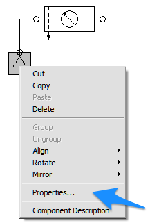

Simulações Circuitos eletrônicos-pneumáticos no FluidSIM
Exemplo: Circuito pneumático simples de avanço-retorno de um pistão sob comando manual (mecânico).
Ref: YouTube: Teoria na Prática com Prof. Pedro Henrique de Jesus: 1 - Vídeo Aula automação pneumática (Início simulação FluidSim), 71K visualizações, 8:28.
Recomendações de uso/Sequencia da simulação:
Menu >> Biblioteca >> Visão Geral (para abrir janela de componentes);
Menu >> File >> New (abrir/iniciar novo diagrama -- arquivo
*.ct-- observar local, pasta da gravação!) Local "padrão" adotado:C:\Program Files\Festo Fluidsim 4.2\Pneumatic\ct\...Iniciar pela alimentação (fonte) de ar-comprimido:

Aparência Símbolo Configurações 
Pressão: 0 à 2 MPa (def: 0,6)
Vazão: 0 à 5000 l/min (def: 1000)Arrastar até janela em branco do novo diagrama:
Acrescentar "Unidade Conservadora" (Air Service Unit), que inclui: filtro de ar, válvula de segurança (regula pressão), manômetro e lubrificador:
Aparência Símbolo Configurações 
Pressão: 0 à 2 MPa (typ: 0,6)
Vazão: 0,1 à 5000 l/min (typ: 750)Obs.: para abrir detalhes sobre o componente, clicar com botão direito do mouse sobre seu ícone; deve abrir uma janela semelhante à mostrada a seguir; selecionar "**Component Description":

Duplo clique sobre certo componente (ou botão direito do Mouse >> Properties), permite configurar suas propriedades como pressão e vazão desejadas: Obs.: Alterar pressão da Unidade Conservadora para: 5 bar:

Interligar compressor à unidade de conservação: processo de "clicar e arrastar". Para tanto selecionar saída do compressor (este ponto circular vai ser ressaltado na cor verde; manter pressionado botão esquerdo do mouse até encontrar entrada da unidade conservadora, círculo que será ressaltado na cor verde enquanto não se confirma a ligação e que muda para vermelho indicando conexão realizada):
Conectando Conexão estabelecida 
Acrescentar cilindro de dupla ação:
Aparências Símbolos Configurações 
Parâmetros default: 
Se for pressionado o botão direito sobre o cilindro pode-se modificar sua configuração:
Ou modificar parâmetros de funcionamento:
Obs.: no momento, ainda não modificar nenhuma propriedade!
Acrescentar uma válvula 4/2 (posteriormente configurada para 4/2) e completar ligações com sistema de alimentação e com atuador (cilindro):

Note que o terminal de saída 3 da válvula ficou sem conexão. Abrir propriedades da Válvula e indicar que a saída 3 fará "retorno para a atmosfera" (simples escape de ar) ou você pode acrescentar um silenciador. Para o primeiro caso, de "retorno à atmosfera", você deve selecionar o terminal 3 e clicar com o botão direito do mouse sobre o mesmo para abrir a caixa de propriedades e ajustar conforme indicado na próxima figura:
Selecionar terminal 3 e abrir propriedades Ajustar propriedades 

Obs.: Em sistemas hidráulicos o retorno é efeito para o tanque de armazenamento do fluído (óleo).
Por enquanto, neste esquema, a válvula ainda não possui nenhum sistema de acionamento. Se faz necessário acrescentar algum tipo de acionamento (manual, mecânico, elétrico). Para este primeiro exemplo, vamos usar acionamento manual (mecânico) para as 2 posições ("lados") da válvula. Para tanto, temos que selecionar a válvula e abrir suas propriedades (clicando 2x sobre a válvula ou cilcando com bitão direito sobre a válvula e selecionando Propriedades). Na configuração da válvula, ajustaremos o lado esquerdo para acionamento manual e o lado direito também com acionamento manual, nos 2 casos usando botão (mecânico) simples:
Note que o diagrama se modificou para:

Note que da forma como está configurada a válvula neste esquema, na sua posição default (neutra, ou de retorno) vamos ter o "retorno" do cilindro (ar ciculando do ponto 1 ao ponto 2, o que mantêm o cilindro recuado). Quando a válvula mudar de posição, o ar vai circular da posição1 para o ponto 4, o fará o cilindro "avançar" -- veja animação mais adiante.
Este primeiro exemplo está pronto, para testá-lo, basta executar um "play", botão "▶︎". Note que assim que o mesmo é pressionado (sua cor muda para verde), no diagrama surgem linhas ressaltadas em azul escuro (indicando linha pressurizada, com ar-comprimido) e em azul claro (linha sem pressão, sem ar-comprimido):

Note que o cilindro pneumático é mantido recuado.
Note o que ocorre quando se clica no botão que está à esquerda da válvula e depois no botão da direita da válvula, segue animação:

Você pode retardar (reduzir velocidade) da simulação clicando na barra de menu em: Opções >> Simulação e alterar "Slow-motion Factor" para um valor como: 6 (ou 15 até):
Opções >> Simulação Alteração da Velocidade 

A figura abaixo mostra a simulação usando fator 12:

Também posso reduzir a velocidade de todo o circuito, reduzindo a pressão do ar-comprimindo. Neste caso, clicando em propriedades do Sistema de Alimentação para reduzir pressão de 5 bar para apenas 0,1 bar:
Reduzindo pressãoPropriedades: De 5 bar para 0,1 bar:  O que resulta na seguinte simulação:

Obs.: Neste caso, o fator slow motion adotado para simulação foi retornado para a posição normal (=1). Note que baixar a pressão resulta menor força para deslocar o cilindro. Então o nível de pressão é ditado pela carga à ser movida pelo cilindro e velocidade desejada.
Podemos ainda substituir um dos botões de acionamento mecânico por um acionamento com retorno por mola. Para tanto, temos que alterar novamente as propriedades da válvula para:

Obs.: Note que (1) retiramos (temos que selecionar uma opção vazia) para o item e depois (2) clicar na caixa indicando retorno por mola. O novo diagrama fica como o mostrado na animação abaixo (fator slow-motion: 6; pressão no sistema: 5 bar):

Perceba agora que para manter o cilindro avançando se faz necessário pressionar continuamente o botão da esquerda (na válvula). Note que toda vez que o usuário solta o botão, a mola força o retorno da válvula.
Fim.
Ref.: YouTube: Teoria na Prática com Prof. Pedro Henrique de Jesus: 1 - Vídeo Aula automação pneumática (Início simulação FluidSim), 71K visualizações, 8:28.
Exemplo: Circuito eletro-pneumático:
Ref.: "FluidSim Eletropneumatica Aula 1" no YouTube (Enéias Belan; 20,2K visualizações; maio/2020; 16:36)
Detalhe: este tipo de circuito contempla 2 diagramas na mesma "folha": um diagrama pneumátivo + um diagrama elétrico.
A idéia aqui é implementar um simples atuador sobre um cilindro simples com 2 botões (pulsadores elétricos), onde um comanda o avanço do pistão e outro o recesso do pistão.
Lista de material:
- cilindro de simples ação;
- Válvula 3/2 (acionamento por botão elétrico e retorno automático por mola)
- unidade de conservação;
- compressor.
1-parte Diagrama pneumático:

Configurar Válvula:

O diagrama deve ter se modificado para:

Falta agora nomear o solenóide: clicar no círculo do solenóide (sua cor muda; é ressaltada para verde) e modificar campo Etiqueta (ou Label) para: "1Y1".

Nomenclatrua sugerida: "1Y1": onde "1"=Atuador 1; "Y"=Solenóide; e "1" novamente para se referir ao solenóide responsável pelo avanço. Lembrar que tudo que está à esquerda da válvula (onde está o solenóide) representa o avanço do controlador.
Você pode também aproveitar e introduzir um silenciador na saída 3 (de exaustão) da válvula:

Agora iniciamos com a parte elétrica, iniciando pela alimentação realizada com 24 Volts e referência com 0 (zero) Volts:
O espaço entre +24 Volts e 0 Volts vai ser completado com os comandos (lógica) da parte elétrica.
Sugere-se iniciar pela parte de controle: selecionamos um botão (push buttom NA). Queremos que quando o usuário pressione este botão, o pistão avance. Quando o usuário solta este botão, o pistão retorna "sozinho":

Este botão vai acionar um relé auxiliar. Este relé será chamado de "K1" ("K" de relé; "1"= primeiro relé do circuito):
Falta acrescentar a parte de potência, isto é, o acionamento da "carga". Para isto vamos selecionar um contato NA. Este contato deverá ser configurado com o mesmo nome do nosso relé, no caso: "K1":

Este relé deve acionar o solenóide:
Este contato NA deve ser alimentado (conectado à +24 Volts):

E terminamos as conexões envolvendo o solenóide:
Falta configurar o nome do solenóide: o mesmo que adotado no diagrama pneumático, ou seja: "1Y1":
Você deve ter percebido que na parte de baixo do diagrama elétrico, sob a coluna correspondente à bobina do relé auxiliar, o FluidSim mostra onde vai haver contatos NA e NF referentes à este rele (no caso K1).
Notamos que estamos usando apenas a parte do contato aberto (NA) que possui relação com a coluna/linha (2) do diagrama elétrico:
Pode-se passar agora à simulação do circuito. Segue diagrama completo abaixo:

Animação:

Problema: A idéia agora é usar um atuador de ação dupla e 2 botões pushbuttom NA, um para comandar o avanço e o outro boão para comandar o recuo. Como o diagrama anterior deve ser modificado?
Note que: neste caso, a atuador simples deverá ser trocado e consequentemente a válvula de controle também deverá ser trocada, por uma do tipo: 5/2 vias.
Solução:
Animação:
Problema: E como o circuito anterior deveria ser modificado para uso de uma chafe de fim de curso?
Nota:
(1) sugere-se acrescentar uma "Régua de posicionamento" (Distance rule):

Ajuste suas propriedades para configurar a posição final. Chamar esta posição (primeira no quadro de configuração) de: "1S2", na posição 100 mm (o que equivale à posição final à ser atingida pelo atuador):
(2). O botão B2 não será mais usado. Pode ser apagado. No logar deste botão será introduzido um contato NA da chave de fim de curso. Aproveitar e mudar nome deste contato para "1S2" que o nome que adotamos anteriormente para indicar certa distância percorrida pelo atuador. Notar que o próprio simular reconhece este contato como sendo a chave de fim de curso! O resultado deverá ser algo do tipo:

Atenção: Aparentemente existe um bug no FluidSim versão quanto a regra de distânicas e configuração dos pontos de interesse. Na janela de configuração abaixo, note que foram configuradas 2 posições: a 1S2 que corresponde ao atuador completamente estendido e a posição 1S0 que corresponde à posição do atuador completamente recuado:

Note que a distância 1S0 não é usada. Consta apenas para entendimento. Repare que agora o contato 1S2 muda para NA conforme o esperado.
Circuito final com animação:

Ref.: YouTube: FluidSim Eletropneumatica Aula 1 – Prof. Enéias Belan, 20.985 visualizações25 de mai. de 2020.
Fernando Passold, atualizado em 11/03/2022; 25/03/2022.